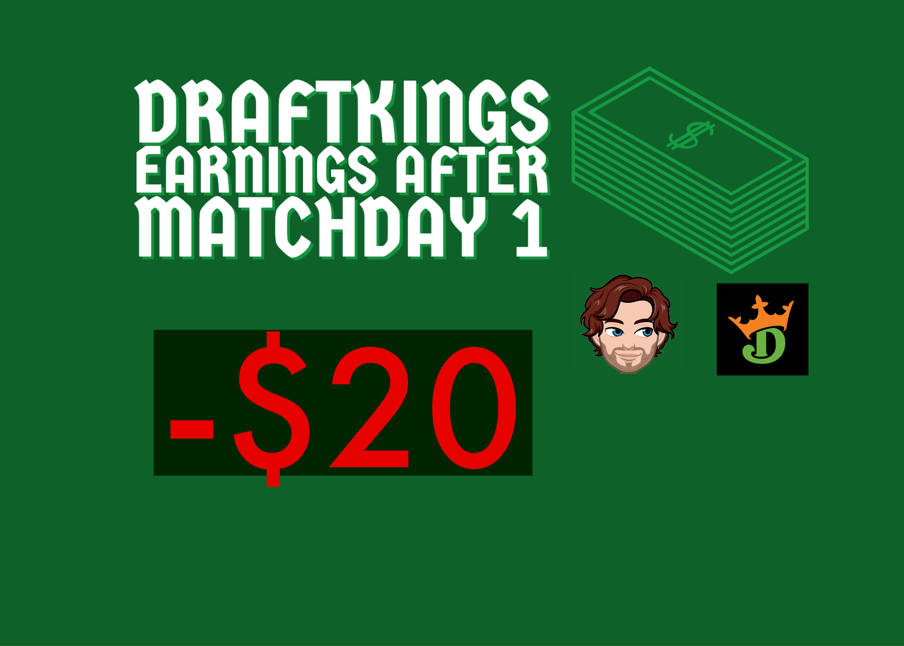

Sept. 8 2022
Sept. 8 2022
For my first post I think I would like to talk about my failed attempted playing DraftKings Fantasy Champions League. As I start to dip my finger into sports betting, I want to chose sports I know I would profit from. I can't use online sports betting platforms and bet on moneylines for example due to the state I live in, but I can do fantasy sports betting. In the past I've made money betting on golf, by picking five golfers who I think will do well. I normally only play on DraftKings and I only play when there is a golf major happening and the top prize is $1,000,000. However this time I decided to try out soccer fantasy for the first time.
If you don't know the rules of fantasy sports betting I don't think I have time to explain it all, but the synoposis is you're given a salary, say $50,000 for example, you have to pick 8 players from that salary. Each player costs a certain amount of money based on form, stature, etc. For example Haaland and Mbappe would be expensive and you would have to get budget the rest of the players you chose. On top of that you can only chose two attackers, two midfielders, two defenders, one goalie, and one ultity player.
For my first attempt playing Champions League fantasy I chose the Matchday 1 fixtures on the 7th of September. One of the first picks I chose was Timo Werner, his price was around 7,800. A player in form and playing against Shakhtar Donetsk. Werner put up an astounding one shot, and played for 70 minutes attaining 3.12 points. That's only the start of the pain. At first I had Haaland in my team, but I didn't want to budget the rest of my team so I decided to pick Benzema who was a little cheaper than Haaland, and I could have more money to work with. After 30 minutes, Benzema was subbed off due to injury. Adding salt to the wound I checked the Man City game to see Haaland had scored 2 goals. Great. Benzema and Werner even my lowest point getters. That belonged to Eder Militao who was subbed off at halftime due to injury. I picked 4 Real Madrid players as I had a feeling they would do well against Celtic so Modric and Courtois saved me from total embarssment. My chances were just about disvolved by halftime.
My Picks
Winners Picks
With all this being said, it was not a good first attempt. But I would be lying to you if I said I wouldn't give it another try. Let's embark on a journey together. Every Champions League week goes by we'll see if I made any money off the DraftKings fantasy. Just kidding I'll probably give up after matchday 5. If I haven't made a profit by matchday 5 of the Champions League, I'll quit. But in the mean time, I have some studying to do for matchday 2, and hopefully I report back with good news
